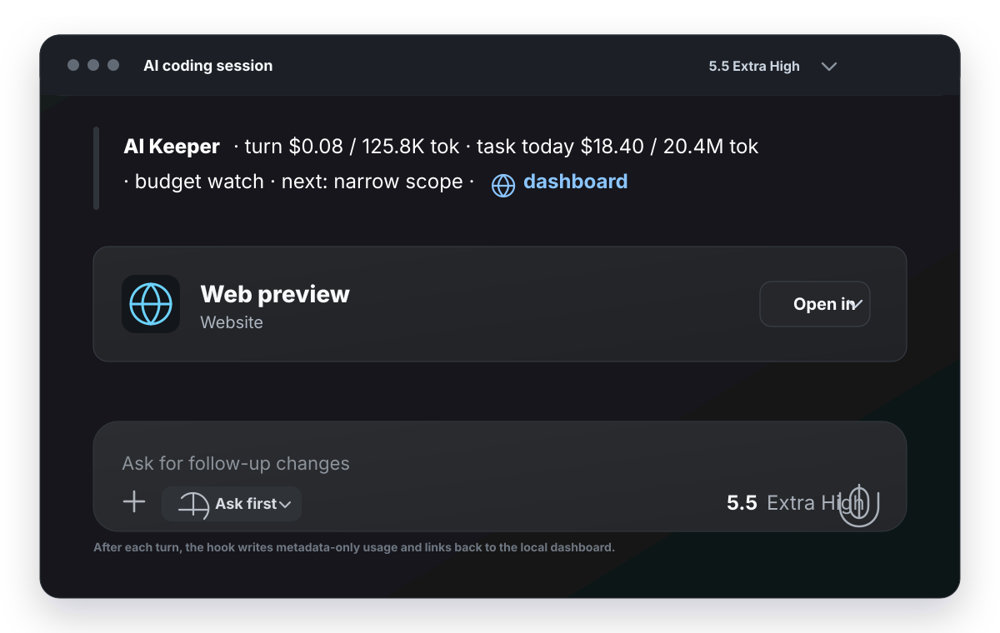

Task Economics
Track spent so far, projected next 30 minutes, and how the current task compares with your usual baseline.
Turn AI agents into a managed engineering budget.
See what each AI-assisted implementation task costs, catch waste while it is happening, and keep prompts and assistant messages out of AI Keeper's database.

After each turn, AI Keeper can add a compact, clickable summary right where the work is happening.

AI Keeper turns local Codex and Claude metadata into a focused efficiency view for everyday AI-assisted engineering work.
Track spent so far, projected next 30 minutes, and how the current task compares with your usual baseline.
Get a small recommendation when a task starts drifting: narrow the prompt, split the task, or commit the working slice.
Review recent turns by phase, provider, model, tokens, and estimated cost without opening raw transcripts.
Use task branches, conventional commits, git hooks, and outcome markers so useful work is easy to measure.
Import local metadata from both providers, including cache read and cache write tokens where available.
AI Keeper stores operational metadata: token counts, timestamps, model labels, cwd, git metadata, session ids, transcript paths, and ingest offsets.
No prompts. No assistant messages. No raw transcript copies.
Run a privacy audit any time and keep private markers in your local home directory, not in the repository.
Start the local daemon, install Codex hooks, sync Claude metadata, and open the dashboard on your machine.
brew install alevkin/tap/aikeeper
aikeeper-install --port 8766Homebrew installs the commands. Run setup after install, or read the user guide for recovery paths.
Trust the hooks in Codex Settings after setup: User config -> Hooks, then click Trust for the AI Keeper hooks and enable their toggles.